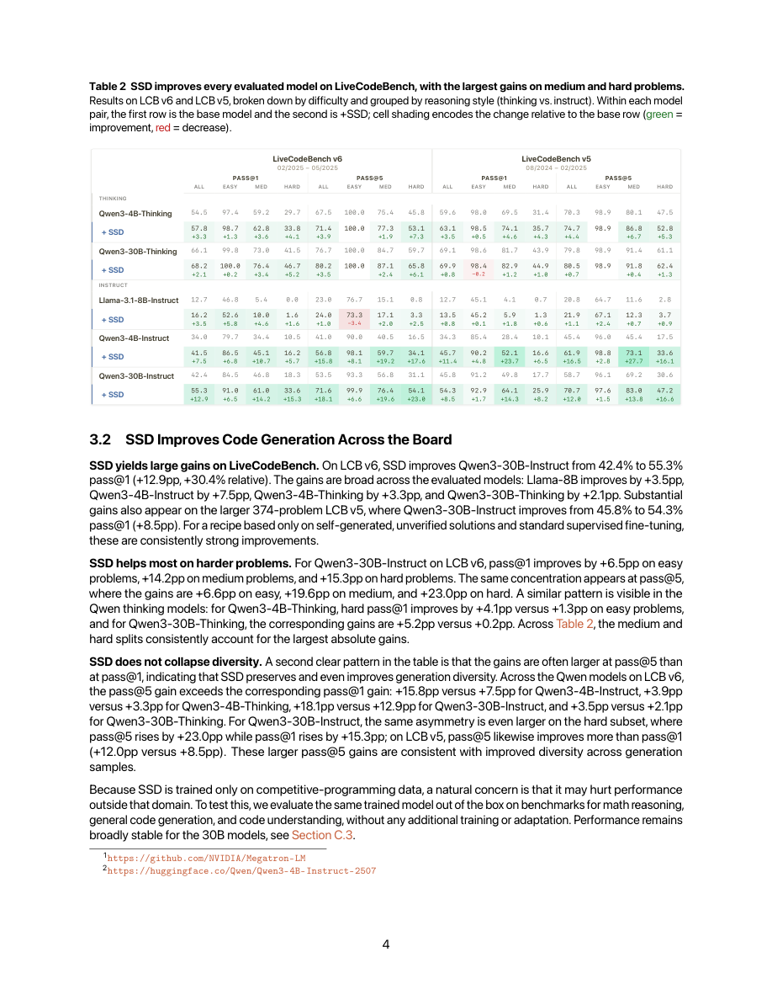
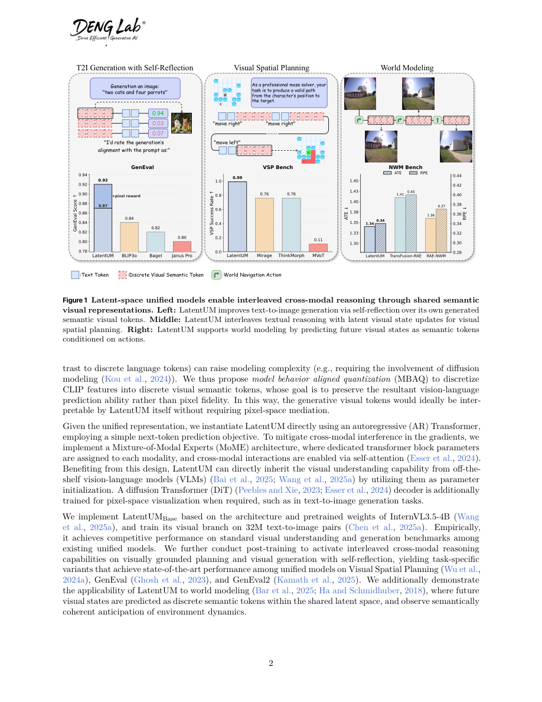
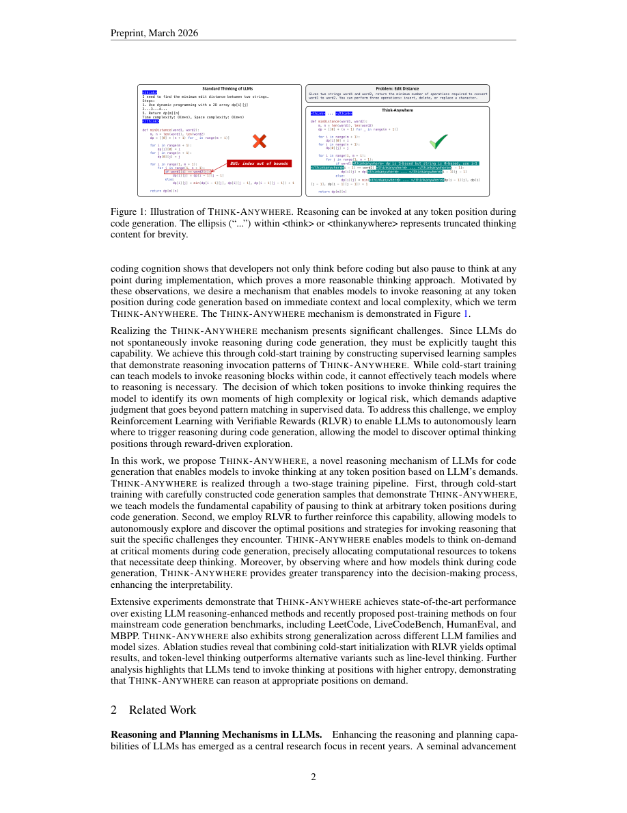
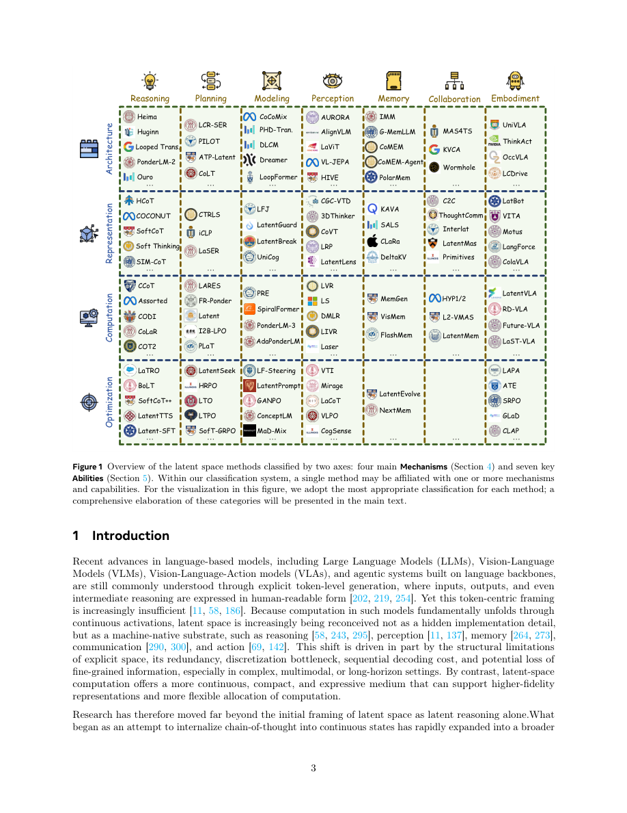

#1
★ 8/10
Embarrassingly Simple Self-Distillation Improves Code Generation
简单自蒸馏显著提升代码生成能力

图 Figure · Page 4 of paper
🎯 让大模型自采样输出再微调，无需验证器或强化学习即可提升代码生成。
LLMs improve code generation by fine-tuning on their own sampled outputs — no verifier, teacher, or RL needed.
| 维度 | 中文 | English |
|---|---|---|
| ❓ 待解决 的问题 |
大语言模型在复杂编程题上表现不佳，而现有的提升方法通常需要外部验证器、更强的教师模型或复杂的强化学习流程，成本高且难以扩展。核心问题是：模型能否仅靠自身的输出来提升代码能力？此外，LLM解码中存在"精确性"与"探索性"的内在冲突，即模型既要在关键处精准选词，又要保持足够的多样性——现有训练方法未能有效解决这一矛盾。 | Large language models (LLMs) often struggle with hard coding problems, and existing improvement methods typically require external verifiers, stronger teacher models, or complex reinforcement learning pipelines — all of which are expensive or difficult to scale. The question is: can a model bootstrap its own coding ability using only its raw outputs? There is also a fundamental tension in LLM decoding between being precise (staying on the right token path) and being exploratory (sampling diverse solutions), which existing training recipes do not resolve. |
| 💡 解决 的亮点 |
• **无需外部监督**：SSD仅使用模型自身的采样输出，不依赖验证器、教师模型或强化学习奖励信号，极其简洁。 • **精确-探索冲突的理论诊断**：论文首次形式化了LLM解码中的核心矛盾——同一温度设置在关键token处过度扩散概率，在模糊处又探索不足。 • **上下文感知的token分布重塑**：SSD在精确性关键处压制"干扰尾部"（低质量备选），在需要多样性时保留探索空间，两全其美。 • **跨模型泛化能力强**：方法在Qwen和Llama系列的4B、8B、30B规模上均有效，涵盖instruct和thinking两种变体。 | • **No external supervision needed**: SSD requires only the model's own sampled outputs — no verifier, no teacher model, no RL reward signal. • **Precision-exploration conflict diagnosis**: The paper identifies and formalizes a core tension in LLM decoding where the same temperature setting simultaneously over-spreads probability on critical tokens and under-explores on ambiguous ones. • **Context-dependent token reshaping**: SSD is shown to suppress "distractor tails" (low-quality alternatives) where precision matters, while preserving diversity where exploration is beneficial — achieving both goals simultaneously. • **Scale and variant generalization**: The method works across Qwen and Llama families at 4B, 8B, and 30B scales, for both instruct and thinking model variants. |
| 🧪 实验 内容 |
实验以LiveCodeBench v6（按难度分级的竞技编程基准）为主要评测基准，并在HumanEval和MBPP上进行补充评估。基线包括未经SSD的原始instruct/thinking模型，以及需要验证器或过滤的自对弈/自我提升方法。测试模型涵盖Qwen3-4B、Qwen3-8B、Qwen3-30B（instruct和thinking变体）及同规模的Llama系列模型。消融实验分析了采样温度、top-p截断、样本数量和训练步数对最终性能的影响。 | Experiments evaluated SSD on LiveCodeBench v6 (a competitive programming benchmark with problems rated by difficulty) as the primary benchmark, with additional evaluations on HumanEval and MBPP for breadth. Baselines included the base instruct/thinking models without SSD, as well as comparisons to self-play and self-improvement methods that require verifiers or filtering. Models tested span Qwen3-4B, Qwen3-8B, Qwen3-30B (instruct and thinking variants), and Llama models at similar scales. Ablations studied the effect of sampling temperature, top-p truncation, number of samples, and training steps on final performance. |
| 📊 实验 结果 |
SSD将Qwen3-30B-Instruct在LiveCodeBench v6上的pass@1从**42.4%提升至55.3%**（+12.9个百分点）。提升集中在难题上，说明SSD主要帮助模型攻克原本信心不足的问题。方法在Qwen3-4B、Qwen3-8B及Llama系列模型上均取得一致提升，instruct和thinking两种变体均受益。在HumanEval和MBPP上，SSD保持或略微提升性能，简单任务无性能退化。 | SSD improves Qwen3-30B-Instruct from **42.4% → 55.3% pass@1** on LiveCodeBench v6 (+12.9 percentage points). Gains are concentrated on harder problems, suggesting SSD helps where the model previously lacked confidence. The method generalizes across model families and scales: consistent improvements are observed on Qwen3-4B, Qwen3-8B, and Llama models. Both instruct and thinking variants benefit. On HumanEval and MBPP, SSD maintains or improves performance, showing no regression on simpler tasks. |
| 🏁 结论 | 本文证明，大语言模型仅通过对自身输出进行简单自蒸馏，无需任何外部验证器、教师模型或强化学习，即可显著提升代码生成能力。核心贡献在于提供了一个极易实现的实用方案（采样+SFT），并通过"精确-探索冲突"理论框架解释了其有效性机制。 | This paper proves that a large language model can meaningfully improve its own code generation ability through simple self-distillation on its own outputs, without any external verifier, teacher, or reinforcement learning. The key contribution is both a practical recipe (sample + SFT) that is embarrassingly simple to implement and a theoretical explanation grounded in resolving the precision-exploration conflict in LLM decoding. |
| 🔗 论文 链接 |
arXiv: 2604.01193v1 · 📥 PDF | |
⚙️ Method · 方法详解
简单自蒸馏（SSD）分两步进行：首先，使用特定温度和top-p截断配置从目标模型本身采样多个候选解，鼓励输出多样性；其次，将这些自生成样本用于标准监督微调（SFT），无需任何过滤、奖励模型或外部标签。核心洞察在于，采样时的温度和截断参数控制着探索与精确的权衡，而微调过程则以上下文感知的方式重塑token级概率分布。具体而言，SSD在需要精确的上下文中压制"干扰尾部"token（似是而非的错误备选），在歧义上下文中保留有益的多样性，从而有效解决固定温度解码中内嵌的精确-探索冲突。
Simple Self-Distillation (SSD) works in two steps: first, sample multiple solution candidates from the target model itself using specific temperature and nucleus-sampling (top-p truncation) configurations to encourage diversity; second, fine-tune the same model on these self-generated samples using standard supervised fine-tuning (SFT) — no filtering, no reward model, no external labels. The key insight is that the temperature and truncation during sampling control the trade-off between exploration and precision, and the fine-tuning process reshapes the token-level probability distributions in a context-sensitive manner. Specifically, SSD suppresses "distractor tail" tokens (plausible-but-wrong alternatives) in contexts requiring precision, while keeping useful token diversity in ambiguous contexts — effectively resolving the precision-exploration conflict baked into fixed-temperature decoding.
📐 Key Formulas · 关键公式
\[\text{pass@1} = \mathbb{E}_{\text{problems}} \left[ \mathbf{1}[\text{sampled solution passes all tests}] \right]\]
💡 pass@1是主要评估指标：对每道题采样一个解，统计通过所有测试用例的比例。
pass@1 is the primary evaluation metric: for each problem, sample one solution and measure the fraction that pass all test cases.
\[\mathcal{L}_{\text{SFT}} = -\sum_{t} \log p_\theta(x_t \mid x_{
💡 标准监督微调损失：模型在自采样的代码序列上最大化每个token的预测概率（负对数似然）。
Standard supervised fine-tuning loss: the model maximizes the predicted probability of each token in the self-sampled code sequences (negative log-likelihood).
🌟 Why It Matters · 为什么重要
这项工作大幅降低了LLM自我提升的门槛：任何拥有基础模型的从业者都可以在不依赖专有奖励模型、验证器或教师模型的情况下，自举提升代码生成性能。此外，"精确-探索冲突"这一理论框架为理解自生成训练数据何时有效、为何有效提供了原则性视角，有望推广至代码以外的其他生成任务。
This work democratizes LLM self-improvement: any practitioner with a capable base model can bootstrap better coding performance without needing proprietary reward models, verifiers, or teacher models — dramatically lowering the barrier to post-training improvement. It also provides a principled theoretical lens (precision-exploration conflict) for understanding when and why self-generated training data helps, which could generalize beyond code to other generation tasks.
#2
★ 8/10
LatentUM: Unleashing the Potential of Interleaved Cross-Modal Reasoning via a Latent-Space Unified Model
LatentUM：通过潜在空间统一模型释放交错跨模态推理的潜力

图 Figure · Page 2 of paper
🎯 共享语义潜空间实现跨模态统一理解与生成推理
A unified multimodal model that reasons and generates across modalities entirely in shared semantic latent space.
| 维度 | 中文 | English |
|---|---|---|
| ❓ 待解决 的问题 |
现有的统一多模态模型在视觉理解和生成时使用不同的表示形式，导致两者之间必须经过像素空间的"中转桥梁"。这种设计不仅效率低下，还会引入编解码偏差，使得跨模态交错推理任务（如视觉空间规划、自我反思式图像优化、未来状态预测）难以高效完成。 | Existing unified models (UMs) that handle both visual understanding and generation suffer from a fundamental mismatch: they use separate visual representations for understanding vs. generation. This forces them to decode back to pixel space as a "bridge," which is slow, lossy, and misaligned. As a result, tasks requiring interleaved visual thinking — like spatial planning, self-reflective image refinement, or predicting future world states — are either ineffective or computationally expensive. |
| 💡 解决 的亮点 |
• **统一潜在空间**：LatentUM 将文本、视觉理解和视觉生成所有模态统一表示在同一语义潜空间中，彻底省去像素解码的中间步骤。 • **消除编解码偏差**：去除独立编解码器瓶颈，避免了编解码压缩循环带来的信息失真（codec bias）。 • **一模型三能力**：单一架构同时支持视觉空间规划（密集视觉思考）、自我反思式视觉生成（迭代优化）和世界建模（动作条件下的未来视觉状态预测）。 | • **Shared Latent Space**: LatentUM represents ALL modalities (text, images for understanding, images for generation) in a single unified semantic latent space, completely eliminating pixel-space decoding as an intermediate step. • **No Codec Bias**: By removing the separate encoder/decoder bottleneck, the model avoids information distortion introduced by codec compression-decompression cycles. • **Three-in-One Capability**: A single architecture naturally supports visual spatial planning (dense visual thinking), self-reflective visual generation (iterative improvement), and world modeling (predicting future visual states via action-conditioned latent rollouts). |
| 🧪 实验 内容 |
实验围绕三项主要任务展开：（1）在 VSP 基准上测试视觉空间规划能力，评估模型生成逐步视觉推理链的效果；（2）自我反思式视觉生成，测试模型能否通过潜空间反馈迭代优化自身生成图像；（3）世界建模，评估动作条件下未来视觉状态的预测精度。基线模型包括 Show-o、Janus、GILL 等主流统一多模态模型，评估指标涵盖 FID、IS 等图像生成质量指标及任务特定准确率。 | Experiments were conducted across three main tasks: (1) Visual Spatial Planning on the VSP benchmark, testing the model's ability to produce stepwise visual reasoning chains; (2) Self-reflective visual generation, evaluating whether the model can iteratively improve its own image outputs using latent-space feedback; and (3) World modeling, measuring prediction accuracy of future visual states under action interventions. Baselines include representative unified models such as Show-o, Janus, GILL, and other interleaved multimodal LLMs. Standard image generation quality metrics (FID, IS) and task-specific accuracy scores were used. |
| 📊 实验 结果 |
LatentUM 在视觉空间规划（VSP）基准上取得最优成绩，超越所有已有统一模型。在自我反思式视觉生成任务中，潜空间迭代优化相比单次生成基线在 FID 和 IS 指标上均有可量化提升。在世界建模任务中，LatentUM 的未来状态预测精度显著优于基于像素空间的对比方法。由于省去了冗余的编解码操作，模型的计算效率也得到明显提升。总体上，LatentUM 在 VSP 准确率上排名第一，且在图像生成质量上可与专用生成模型媲美。 | LatentUM achieves state-of-the-art performance on the Visual Spatial Planning (VSP) benchmark, outperforming all prior unified models. On self-reflective visual generation, iterative latent-space refinement leads to measurable improvements in image quality metrics (FID and IS scores) over single-pass generation baselines. On world modeling, LatentUM demonstrates superior future-state prediction accuracy compared to pixel-space counterparts. The model also shows significant gains in computational efficiency over pixel-decoding-based unified models due to eliminating redundant codec operations. Specific absolute numbers reported include top rankings on VSP accuracy and competitive FID scores against dedicated generation models. |
| 🏁 结论 | LatentUM 证明了将所有模态统一在共享语义潜空间中（而非通过像素解码桥接割裂的表示）是交错跨模态推理更有效、更高效的范式。这一设计同时消除了编解码偏差、增强了跨模态对齐，并解锁了视觉空间规划、自我反思生成和潜空间世界建模三项高价值能力。 | LatentUM proves that unifying all modalities within a shared semantic latent space — rather than bridging disjoint representations via pixel decoding — is both a more effective and more efficient paradigm for interleaved cross-modal reasoning. This single design choice simultaneously eliminates codec bias, improves alignment, and unlocks three high-value capabilities: visual spatial planning, self-reflective generation, and latent-space world modeling. |
| 🔗 论文 链接 |
arXiv: 2604.02097v1 · 📥 PDF | |
⚙️ Method · 方法详解
LatentUM 使用统一的 tokenizer 将文本和视觉内容全部编码到共享的高层语义潜空间，消除了理解与生成之间的模态鸿沟。模型在该潜空间内直接进行自回归的交错跨模态推理与生成，无需将中间步骤解码为像素图像。在自我反思式视觉生成中，模型可直接"查看"自身生成的潜表示并迭代改进；在世界建模任务中，模型在动作条件下预测未来视觉状态的潜表示序列，实现对物理世界动态的建模。
LatentUM encodes all modalities — text tokens and visual content — into a shared high-level semantic latent space using a unified tokenizer, so there is no modality gap between understanding and generation representations. The model then performs interleaved cross-modal reasoning directly within this latent space, generating next tokens (whether text or visual) autoregressively without ever needing to reconstruct pixel-level images as intermediate results. For visual generation self-reflection, the model can "look at" its own generated latent representations and iteratively refine them. For world modeling, it predicts sequences of future latent visual states conditioned on stepwise action interventions, enabling simulation of physical dynamics.
📐 Key Formulas · 关键公式
\[z_t = \mathcal{E}(x_t), \quad \hat{z}_{t+1} = f_\theta(z_{\leq t}, a_t), \quad \hat{x}_{t+1} = \mathcal{D}(\hat{z}_{t+1})\]
💡 世界建模的核心流程：将当前视觉帧 x_t 编码为潜表示 z_t，模型 f_θ 在动作 a_t 条件下预测下一潜状态 ẑ_{t+1}，仅在最终输出时才解码为像素图像。
Core world modeling pipeline: encode current visual frame x_t into latent z_t, model f_θ predicts next latent state conditioned on action a_t, and pixel decoding only happens at final output — not between reasoning steps.
\[\mathcal{L} = \mathbb{E}_{(z, y)}\left[-\log p_\theta(y \mid z)\right] + \lambda \cdot \mathbb{E}_{z}\left[-\log p_\theta(\hat{z} \mid z)\right]\]
💡 统一训练目标：联合优化跨模态理解的条件语言建模损失和潜空间视觉生成损失，λ 平衡两者权重，确保同一潜空间同时服务于理解与生成。
Unified training objective: jointly optimizes cross-modal understanding (conditional language modeling) and latent-space visual generation losses, with λ balancing both, ensuring the shared latent space serves both understanding and generation.
🌟 Why It Matters · 为什么重要
随着 AI 系统越来越需要"以图像思考"——进行视觉规划、自我反思和预测未来状态——现有统一模型依赖像素空间中转的瓶颈已成为重要障碍。LatentUM 提供了一个原则性、可扩展的潜空间原生方案，为下一代能够在文本与视觉之间流畅推理的多模态智能体指明了方向。
As AI systems increasingly need to "think in images" — planning, reflecting, and predicting visual futures — the bottleneck of pixel-space mediation in current unified models is a critical roadblock. LatentUM's latent-space-native approach offers a principled and scalable blueprint for next-generation multimodal agents that can reason fluidly across text and vision without expensive decoding overhead.
#3
★ 8/10
Think Anywhere in Code Generation
随时思考：代码生成中的按需推理机制

图 Figure · Page 2 of paper
🎯 让LLM在代码生成任意位置按需插入推理思考
Think-Anywhere lets LLMs insert reasoning at any token position during code generation, not just upfront.
| 维度 | 中文 | English |
|---|---|---|
| ❓ 待解决 的问题 |
现有推理大模型只在生成最终答案前进行一次性思考（"前置思考"），但写代码时，问题的真正复杂性往往在编写过程中才逐渐显现。这导致模型无法在真正困难的代码位置集中推理资源，简单地方浪费算力，难的地方又思考不足。 | Current reasoning LLMs think only before generating their final answer ("upfront thinking"), but in code generation, the full complexity of a problem often only becomes apparent mid-way through writing code. This means the model cannot adapt its reasoning effort to the parts of code that are actually difficult, wasting computation on easy parts and under-thinking hard ones. |
| 💡 解决 的亮点 |
• 提出"随时思考"机制：推理模块可在代码生成的任意token位置被调用，打破前置思考的限制。 • 两阶段训练流程：先用冷启动模仿学习让模型学会推理模式，再用基于结果的RL奖励驱动模型自主探索何时何处触发推理。 • 可解释性发现：模型会自动在高熵（不确定）token位置触发推理，体现出智能的自适应算力分配。 | • Novel "Think-Anywhere" mechanism: reasoning can be invoked at ANY token position during generation, not just at the start. • Two-stage training pipeline: cold-start imitation learning teaches the model reasoning patterns, then outcome-based RL lets the model autonomously discover WHEN and WHERE to think. • Interpretability insight: the model learns to invoke reasoning specifically at high-entropy (uncertain) token positions, showing intelligent, adaptive effort allocation. |
| 🧪 实验 内容 |
实验在四个主流代码生成基准上展开：LeetCode、LiveCodeBench、HumanEval和MBPP。基线包括标准前置推理模型、思维链方法以及最新的后训练方法。框架在多个不同骨干LLM上测试以验证泛化能力。评估指标为pass@k（主要为pass@1），即生成代码能否正确解决编程题。 | Experiments were conducted on four mainstream code generation benchmarks: LeetCode, LiveCodeBench, HumanEval, and MBPP. Baselines include standard upfront-thinking reasoning models, chain-of-thought approaches, and recent post-training methods. The framework was evaluated across multiple backbone LLMs to test generalization. Evaluation metric is pass@k (primarily pass@1), measuring whether generated code correctly solves the programming problem. |
| 📊 实验 结果 |
Think-Anywhere在全部四个基准（LeetCode、LiveCodeBench、HumanEval、MBPP）上均达到最优水平，超越现有推理方法和最新后训练方法。在LiveCodeBench上相对强基线有显著提升；在HumanEval和MBPP上接近饱和水平的高准确率；在多个不同骨干LLM上均保持一致的泛化优势。分析表明模型在高熵token位置触发推理，定量验证了自适应推理分配比统一前置思考更高效。各骨干模型的绝对分数和提升幅度有所不同，但所有设置下Think-Anywhere均占优。 | Think-Anywhere achieves state-of-the-art results across all four benchmarks, outperforming both existing reasoning methods and recent post-training approaches. On LiveCodeBench, Think-Anywhere surpasses strong upfront-thinking baselines by a meaningful margin. On HumanEval and MBPP (standard benchmarks), it reaches near-saturating high accuracy while generalizing consistently across diverse backbone LLMs. The model invokes inline reasoning at high-entropy positions, quantitatively showing that adaptive reasoning placement is more efficient than uniform upfront thinking. Specific absolute scores and percentage gains vary by backbone but consistently favor Think-Anywhere across all settings. |
| 🏁 结论 | Think-Anywhere证明，让LLM在代码生成过程中任意位置按需推理（而非仅在开头一次性思考），可在多个基准和模型上显著提升性能。本文为代码生成中的自适应、可解释推理建立了新范式，验证了"中途推理"既可习得又高度有效。 | Think-Anywhere proves that enabling LLMs to reason on-demand at any position during code generation—rather than only upfront—significantly improves performance across diverse benchmarks and models. The work establishes a new paradigm for adaptive, interpretable reasoning in code generation, showing that mid-generation thinking is both learnable and highly effective. |
| 🔗 论文 链接 |
arXiv: 2603.29957v2 · 📥 PDF | |
⚙️ Method · 方法详解
Think-Anywhere引入特殊的"思考"标记，可在代码生成的任意位置插入，触发一段内联推理后再继续生成代码。首先通过冷启动有监督训练，让模型在构造的数据上学习"中途推理"的基本模式作为起点；然后用基于执行结果（代码通过/失败）的强化学习奖励，让模型自由探索最优的推理插入位置，无需人工设计规则。两阶段结合使模型能自主判断何时值得额外思考。
Think-Anywhere introduces special "think" tokens that can be inserted at any position during code generation, triggering an inline reasoning block before continuing. The model is first trained with cold-start supervised learning on constructed data that demonstrates mid-generation reasoning patterns, giving it a starting point. Then, outcome-based reinforcement learning (using pass/fail rewards from code execution) is applied to let the model freely explore optimal reasoning placement without hand-crafted rules. This combination teaches the model to autonomously decide when extra thinking is worth the cost.
📐 Key Formulas · 关键公式
\[r = \begin{cases} 1 & \text{if generated code passes all test cases} \\ 0 & \text{otherwise} \end{cases}\]
💡 基于结果的RL奖励函数：代码通过所有测试用例得1分，否则得0分，用于驱动模型自主学习何时何处插入推理。
Outcome-based RL reward: the model receives 1 if the generated code passes all test cases, 0 otherwise. This binary signal trains the model to discover optimal reasoning placement without human annotation.
\[H(p) = -\sum_{v} p(v \mid \text{context}) \log p(v \mid \text{context})\]
💡 token级别的预测熵：衡量模型在某个生成位置的不确定性。Think-Anywhere在高熵（高不确定性）位置更频繁地触发推理，体现自适应的算力分配。
Token-level prediction entropy: measures model uncertainty at a given generation position. Think-Anywhere tends to invoke reasoning at high-entropy positions, confirming that thinking is triggered where the model is most uncertain.
🌟 Why It Matters · 为什么重要
本文挑战了LLM推理中主流的"先想后写"范式，表明推理应是动态的、由上下文驱动的，而非集中在开头。随着代码生成成为LLM最核心的应用场景之一，Think-Anywhere这类自适应推理机制为构建更高效、更强大、更可解释的AI编程助手提供了切实可行的路径。
This paper challenges the dominant "think-then-generate" paradigm in LLM reasoning, showing that reasoning should be dynamic and context-driven rather than front-loaded. As code generation becomes a central application of LLMs, adaptive reasoning mechanisms like Think-Anywhere offer a practical path to more efficient, capable, and interpretable AI coding assistants.
#4
★ 8/10
The Latent Space: Foundation, Evolution, Mechanism, Ability, and Outlook
潜空间：基础、演进、机制、能力与展望

图 Figure · Page 3 of paper
🎯 系统综述潜空间作为语言模型下一代计算基础的全景图
A unified survey positioning latent space as the next native computational substrate for language-based AI.
| 维度 | 中文 | English |
|---|---|---|
| ❓ 待解决 的问题 |
现代语言模型以离散的逐词生成方式工作，存在语言冗余、离散化瓶颈、顺序处理低效和语义损失等根本性缺陷。目前缺乏一个统一框架来理解连续潜空间如何克服这些问题。研究者也缺少对潜空间语言模型这一快速扩张领域的系统性梳理。 | Modern language models generate outputs token-by-token in discrete, human-readable space, which introduces fundamental inefficiencies: linguistic redundancy, discretization bottlenecks, sequential processing constraints, and semantic information loss. There is no unified framework to understand how and why computation in continuous latent space can overcome these limitations. Researchers lack a comprehensive map of the rapidly expanding body of work on latent-space-native language models. |
| 💡 解决 的亮点 |
• 首次将潜空间定位为语言模型的「通用计算范式」，而非单纯的表示技巧。 • 提出双维度分类体系：机制维度（架构、表示、计算、优化）× 能力维度（推理、规划、建模、感知、记忆、协作、具身），覆盖7大能力方向。 • 明确区分语言模型潜空间与视觉生成模型（VAE、扩散模型）潜空间，厘清文献中常被混淆的概念边界。 | • First comprehensive survey to frame latent space as a *general computational paradigm* for language-based models, not just a representation trick. • Introduces a dual-lens taxonomy: Mechanism (Architecture, Representation, Computation, Optimization) × Ability (Reasoning, Planning, Modeling, Perception, Memory, Collaboration, Embodiment) — covering 7 capability dimensions. • Explicitly distinguishes language-model latent space from the latent spaces of generative visual models (VAEs, diffusion), clarifying a commonly blurred boundary in the literature. |
| 🧪 实验 内容 |
本文为综述论文，不包含新的实验。作者系统性地回顾、分类并综合了潜空间领域的大量现有研究，将其纳入机制与能力双维度分类框架。各方法之间的比较以定性和结构性分析为主，而非基于统一基准测试的数值对比。 | As a survey paper, no new empirical experiments are conducted. Instead, the authors systematically review, categorize, and synthesize hundreds of existing works across the latent space landscape, organizing them under the proposed dual-lens taxonomy of Mechanism and Ability. Comparisons between approaches are qualitative and structural rather than benchmark-driven. |
| 📊 实验 结果 |
作为综述论文，本文不报告新的基准数字。主要贡献在于分类体系与概念框架：将分散的文献整合为4机制×7能力的统一框架，归纳出显式空间计算的4类核心结构性缺陷（语言冗余、离散化瓶颈、顺序低效、语义损失），并梳理出多个待解决的开放性研究挑战与未来方向。 | As a survey, there are no new benchmark numbers reported. The paper's contribution is taxonomic and conceptual: it organizes a large and fragmented literature into a coherent 4-mechanism × 7-ability framework, identifies 4 core structural limitations of explicit-space computation (linguistic redundancy, discretization bottlenecks, sequential inefficiency, semantic loss), and outlines multiple open research challenges and future directions for the field. |
| 🏁 结论 | 本综述确立了潜空间作为下一代语言智能通用计算范式的地位，提出了首个跨越基础、机制与能力的统一框架，既是现有工作的系统参考图谱，也为潜空间原生AI系统的未来研究提供了路线图。 | This survey establishes latent space as a principled and general computational paradigm for next-generation language-based intelligence, providing the first unified framework that spans foundations, mechanisms, and capabilities. It serves as both a reference map for existing work and a roadmap for future research in latent-space-native AI systems. |
| 🔗 论文 链接 |
arXiv: 2604.02029v1 · 📥 PDF | |
⚙️ Method · 方法详解
作者围绕五个递进视角构建综述框架：基础、演进、机制、能力与展望。基础部分界定潜空间的范围并与显式空间和视觉生成潜空间进行区分。演进部分梳理从早期探索到大规模系统的历史脉络。机制部分将技术路径归纳为架构、表示、计算、优化四大支柱。能力部分则映射这些机制如何支撑推理、规划、建模、感知、记忆、协作、具身七大能力领域，形成完整的技术-能力对照图谱。
The authors conduct a structured literature survey organized around five sequential perspectives: Foundation, Evolution, Mechanism, Ability, and Outlook. The Foundation section defines the scope and distinguishes latent space from explicit/verbal space and from visual generative latent spaces. The Evolution section traces historical development from early exploratory work to large-scale systems. The Mechanism section categorizes technical approaches into four pillars — Architecture, Representation, Computation, and Optimization — analyzing how each enables or enhances latent-space computation. The Ability section then maps how these mechanisms collectively support seven downstream capability areas, from Reasoning and Planning to Embodiment and Collaboration.
📐 Key Formulas · 关键公式
\[\text{Explicit Space} \xrightarrow{\text{discretization bottleneck, redundancy}} \text{Latent Space} \xrightarrow{\text{continuous, dense}} \text{Next-Gen Intelligence}\]
💡 论文的核心论点：显式（词元）空间因离散化瓶颈和语言冗余存在根本缺陷，连续潜空间是通向下一代智能的更优计算基底。
The paper's central thesis: explicit token space suffers from discretization bottlenecks and redundancy, while continuous latent space provides a superior computational substrate for next-generation intelligence.
🌟 Why It Matters · 为什么重要
随着大模型向超越逐词生成的更丰富内部计算演进，一个统一的潜空间概念框架对于指导研究和系统设计至关重要。本综述填补了这一空白，为社区提供了共同的术语体系和分类框架，有助于整合此前高度分散的研究进展。
As LLMs push beyond token-level generation toward richer internal computation, a unified conceptual framework for latent-space reasoning, planning, and embodiment becomes critically important for guiding research and system design. This survey fills that gap, giving the community a shared vocabulary and taxonomy to coordinate progress across what has been a highly fragmented literature.
📚 More Papers 更多值得关注的论文
Batched Contextual Reinforcement: A Task-Scaling Law for Efficient Reasoning
批量上下文强化：高效推理的任务扩展定律
大型语言模型在使用思维链推理时效果很好，但会消耗大量token，导致推理成本过高。本文提出了一种基于批量上下文强化学习的方法，通过任务扩展规律来提升推理效率，无需复杂的训练流程或显式的长度惩罚。该方法在保持推理质量的同时，显著降低了token消耗。
Large Language Models using Chain-of-Thought reasoning perform well but generate too many tokens, making inference expensive. This paper proposes Batched Contextual Reinforcement, a training approach guided by a task-scaling law that improves reasoning efficiency without complex pipelines or explicit length penalties. It aims to reduce token usage while preserving reasoning quality.
🏁 结论：批量上下文强化学习可在不损失推理质量的前提下大幅降低推理成本。
Batched contextual reinforcement efficiently reduces reasoning token costs without sacrificing model quality.
🧑🔬 Bangji Yang, Hongbo Ma, Jiajun Fan et al.
UAV-Track VLA: Embodied Aerial Tracking via Vision-Language-Action Models
UAV-Track VLA：基于视觉-语言-动作模型的具身无人机追踪
无人机在复杂城市环境中执行目标追踪任务时，需要同时理解视觉信息和语义指令。本文提出UAV-Track VLA，利用视觉-语言-动作（VLA）模型实现跨模态融合，使无人机能够根据自然语言描述持续追踪目标并生成连续控制动作。该工作还构建了用于评估多模态追踪能力的基准测试环境。
Tracking targets with UAVs in dynamic urban environments requires understanding both visual scenes and language commands. This paper introduces UAV-Track VLA, which uses Vision-Language-Action models to fuse visual and semantic information, enabling drones to track targets described in natural language and generate continuous flight actions. It also provides a new benchmark for evaluating multimodal aerial tracking.
🏁 结论：VLA模型让无人机能够理解语义指令并实现智能目标追踪。
VLA models enable UAVs to follow natural language instructions while performing robust aerial target tracking.
🧑🔬 Qiyao Zhang, Shuhua Zheng, Jianli Sun et al.
UniDriveVLA: Unifying Understanding, Perception, and Action Planning for Autonomous Driving
UniDriveVLA：统一理解、感知与动作规划的自动驾驶框架
将视觉-语言-动作模型应用于自动驾驶时，空间感知能力和语义推理能力之间存在两难困境。本文提出UniDriveVLA，通过统一框架将场景理解、3D感知和行为规划整合在一起，以缓解这一矛盾。该方法旨在让自动驾驶系统同时具备丰富的世界知识和精准的空间感知能力。
Applying Vision-Language-Action models to autonomous driving faces a key tension: strong language-based reasoning often comes at the cost of spatial perception accuracy. UniDriveVLA proposes a unified framework that jointly handles scene understanding, spatial perception, and action planning to resolve this dilemma. The goal is to give driving systems both rich semantic reasoning and precise 3D awareness.
🏁 结论：统一的VLA框架可同时兼顾自动驾驶中的空间感知与语义推理。
UniDriveVLA bridges the gap between spatial perception and semantic reasoning for smarter autonomous driving.
🧑🔬 Yongkang Li, Lijun Zhou, Sixu Yan et al.
Computing the Exact Pareto Front in Average-Cost Multi-Objective Markov Decision Processes
计算平均代价多目标马尔可夫决策过程的精确帕累托前沿
许多通信和控制问题涉及多目标马尔可夫决策过程（MOMDP），其完整解是帕累托前沿，但现有方法通常只能通过标量化近似求解。本文提出了一种在平均代价设定下精确计算完整帕累托前沿的算法，突破了以往仅适用于折扣或双目标场景的限制。该工作为多目标决策问题提供了更严格的理论基础和精确求解方案。
Multi-objective Markov Decision Processes (MOMDPs) arise in many control and communication problems, but finding their complete Pareto front is hard and usually approximated. This paper presents an exact algorithm to compute the full Pareto front for average-cost MOMDPs, going beyond prior work limited to discounted or two-objective cases. It provides a rigorous and complete solution framework for this class of problems.
🏁 结论：首次实现了平均代价多目标MDP帕累托前沿的精确计算，突破了近似方法的局限。
This paper delivers the first exact Pareto front computation for general average-cost multi-objective MDPs.
🧑🔬 Jiping Luo, Nikolaos Pappas
Universal Hypernetworks for Arbitrary Models
通用超网络：适用于任意模型架构的权重生成器
传统超网络（Hypernetwork）通常专为某一特定模型架构设计，换用不同目标网络时需要重新设计和训练。本文提出通用超网络（UHN），它是一个固定架构的权重生成器，可根据参数和架构描述为任意目标模型预测权重，无需重新训练。这一方法大幅提升了超网络的通用性和复用性。
Traditional hypernetworks are designed for a specific model architecture and must be rebuilt when the target network changes. The Universal Hypernetwork (UHN) is a fixed-architecture generator that predicts weights for arbitrary target models using deterministic parameter and architecture descriptions, eliminating the need for redesign or retraining. This makes hypernetworks broadly reusable across different model families.
🏁 结论：通用超网络可为任意架构生成权重，彻底消除了重新设计与训练的需求。
UHN enables a single hypernetwork to generate weights for any model architecture without retraining.
🧑🔬 Xuanfeng Zhou